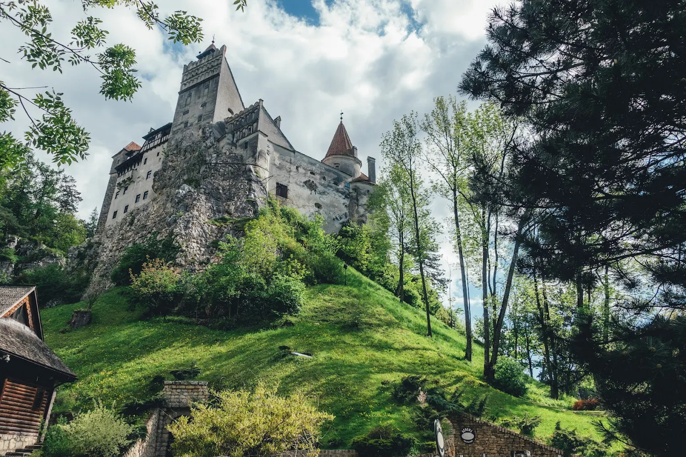

- Castelul Bran – cunoscut ca „Castelul lui Dracula". Unul dintre cele mai faimoase castele din lume, Bran este adesea asociat cu legenda lui Dracula, deși legătura cu Vlad Țepeș este mai degrabă simbolică.
- Brașov – oraș medieval cu Piața Sfatului, Biserica Neagră, Poiana Brașov.
- Sighișoara – singura cetate medievală locuită din Europa. Străzile pietruite, turnurile vechi și casele colorate te poartă într-o altă epocă.
- Sibiu – fostă Capitală Culturală Europeană, cu un centru istoric superb.
